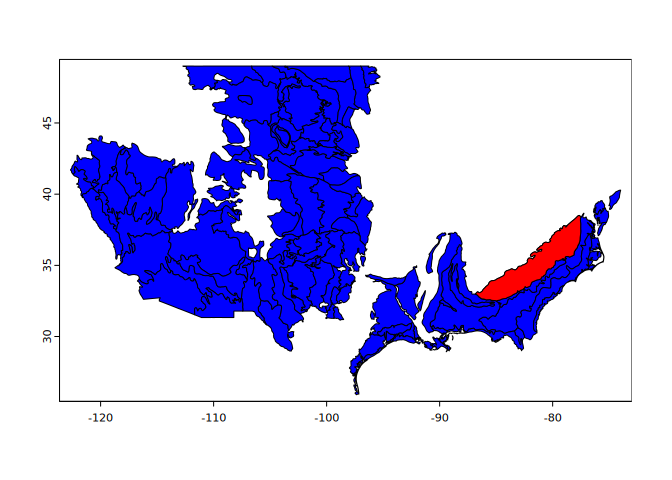

The goal of {hydricsoils} is to provide easy access to definitions, criteria, and area of applicability for ‘Field Indicators of Hydric Soils in the United States’ and also to provide tools which assist in evaluating associated soil morphology.
Installation
You can install the development version of {hydricsoils} like so:
if(!require("remotes")) install.packages("remotes")
remotes::install_github("brownag/hydricsoils")Examples
Example 1
This basic example shows how to determine the area of applicability of indicator “A9” (also known as “1cm Muck”).
library(hydricsoils)
data(fihs, package = "hydricsoils")
subset(fihs, indicator == "A9", select = c("usage", "usage_symbols", "except_mlra"))
#> usage
#> 11 For use in LRRs D, F, G, H, P (except for MLRA 136), and T; for testing in LRRs C, I, J, and O
#> usage_symbols except_mlra
#> 11 D, F, G, H, P, T 136If we load the MLRA v5.2 database, for instance using {terra}, we can visualize the extent of where the “A9” indicator is used (in blue), and then show the MLRA it is excluded from (a portion of LRR P, “South Atlantic and Gulf Slope Cash Crops, Forest, and Livestock Region”, in red):
library(terra)
#> terra 1.7.73
x <- vect("/vsizip//vsicurl/https://www.nrcs.usda.gov/sites/default/files/2022-10/MLRA_52_2022.zip/MLRA_52_2022")
ind <- fihs[fihs$indicator == "A9",]
xsub <- subset(x, x$LRRSYM %in% ind[, 'usage_symbols'][[1]])
plot(xsub, col = "BLUE")
plot(xsub[xsub$MLRARSYM %in% unlist(ind$except_mlra),], add = TRUE, col = "RED")
Example 2
Next let’s find all of the indicators that can be used in LRR “C” (also known as the “California Subtropical Fruit, Truck, and Specialty Crop Region”)
subset(fihs, sapply(usage_symbols, \(x) any(x == "C")), select = c("indicator", "indicator_name"))
#> indicator indicator_name
#> 3 A1 Histosol or Histel
#> 4 A2 Histic Epipedon
#> 5 A3 Black Histic
#> 6 A4 Hydrogen Sulfide
#> 7 A5 Stratified Layers
#> 13 A11 Depleted Below Dark Surface
#> 14 A12 Thick Dark Surface
#> 21 S1 Sandy Mucky Mineral
#> 24 S4 Sandy Gleyed Matrix
#> 25 S5 Sandy Redox
#> 26 S6 Stripped Matrix
#> 33 F1 Loamy Mucky Mineral
#> 34 F2 Loamy Gleyed Matrix
#> 35 F3 Depleted Matrix
#> 36 F6 Redox Dark Surface
#> 37 F7 Depleted Dark Surface
#> 38 F8 Redox DepressionsThis matches the information we can find in the guide in Appendix 1.
Future work
In future updates I hope to include:
A defined data.frame format with standard column names, data types, and relationships that are needed to evaluate criteria for all established and provisional indicators
A glossary with definitions of key criteria and terms
An index to figures and pictures from the guide, and mapping of figures to specific indicators
Parsing of LRRs and MLRAs where established indicators are being tested (new columns in existing dataset, or new dataset)
Parsing of LRRs and MLRAs where provisional indicators are being tested (new dataset)
Routines for automatic evaluation of input data to determine which indicators may be met
Spatial methods and helpers for creating graphics depicting where indicators are used or not
Disclaimer
The data and routines in this R package (hereafter the “Work”) are not intended as a replacement for a thorough understanding of the latest edition Field Indicators of Hydric Soils as distributed by official sources.
This Work is released under the Creative Commons 1.0 Universal license. In particular the Work is provided “as-is” and makes no representations or warranties of any kind, express, implied, statutory or otherwise, including without limitation warranties of title, merchantability, fitness for a particular purpose, non infringement, or the absence of latent or other defects, accuracy, or the present or absence of errors, whether or not discoverable, all to the greatest extent permissible under applicable law.
References
United States Department of Agriculture, Natural Resources Conservation Service. 2018. Field Indicators of Hydric Soils in the United States, Version 8.2. L.M. Vasilas, G.W. Hurt, and J.F. Berkowitz (eds.). USDA, NRCS, in cooperation with the National Technical Committee for Hydric Soils. Available online: https://www.nrcs.usda.gov/resources/guides-and-instructions/field-indicators-of-hydric-soils